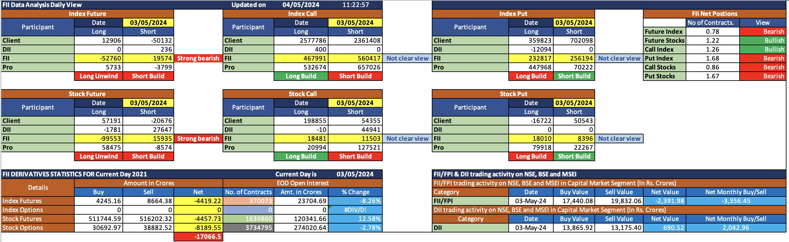
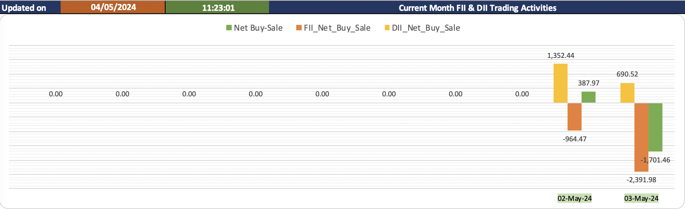
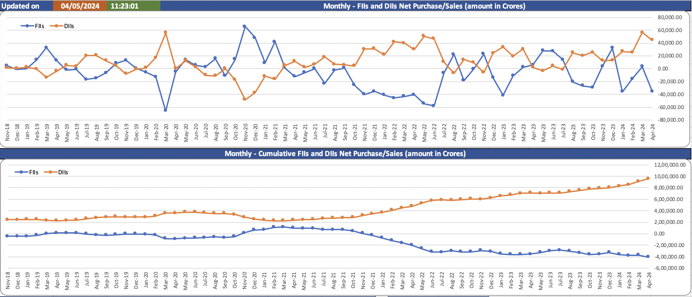
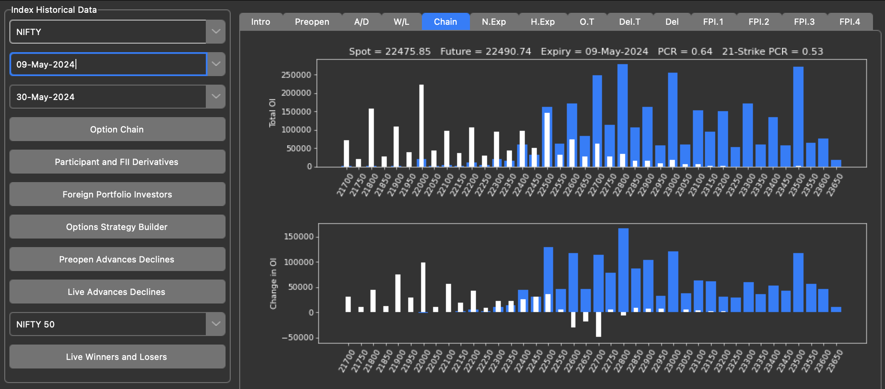

I began this project in mid-September 2020 when I had just started trading in the Indian stock market. Initially, I thought of trading as gambling. However, during the lockdown when I had spare time and everyone was discussing how everything was going up, I became more active.
I used to check financial data on the NSE website and take trades. However, it was a very time-consuming process. Being an academician with a strong background in data analysis and coding, I started writing code to visually analyze the data so that I wouldn't have to check numbers manually. My objective was clear: to develop something that would allow me to analyze stocks and the market quickly. Visual analysis of data and drawing inferences swiftly is crucial for making decisions.
Thus, Visual Trading came into existence. Through Visual Trading, I can analyze stocks and market indices by processing the data and representing it visually. It processes data both online and offline, making it useful for day traders as well. The tool is user-friendly in my experience and fulfills its purpose. Additionally, it can screen stocks based on certain criteria, and we can create those criteria on the fly.
FII and DII Data Analysis
This analyses the FII and DII data also present data visually.

FII, DII, and Net Buy-Sell.

This analyses the FII and DII data also present data visually.

Options Data
Option Chain of Index

FPI Data Analysis
Foreign Portfolio Investment (FPI) in different industry (latest 6 months)